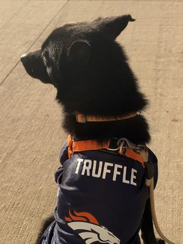

I tested 1.7 million football plays for momentum. A good play really does help the next one, but only because of where it leaves the ball.
I'm a Broncos fan, so "momentum swings" are my weekly cardio. I wanted to know if momentum is real or just a story we tell afterward. Make a call before you read on. There's one in every chapter, and your score lives in the corner.
The question: after a good play, the next one works 46% of the time instead of 42%. Is that momentum, or something else?
A fair coin doesn't remember. After five heads, the next flip is still 50/50.
Football is a weighted coin, and a good play changes the weight: gain 9 yards on 2nd-and-10 and you face a short 3rd-and-1 instead of a long 3rd-and-10. That's field momentum. It's real, and it's just the rules of football.
Felt momentum is the claim on top: the last play helps beyond the spot it left you, because the team is rolling. That's about order, not amount. So the test is simple: shuffle the plays, and if the real order beats the shuffles, the coin remembers.
Six heads either way. The first row looks like a hot start, the second like nothing.
Percentage points of next-play success. The orange dot is all felt momentum can claim, with its 95% range. Same answer in 1999–2018 (); 2026 so far reads on a smaller sample.
"A good play setting up the next one is momentum." Then it exists: it's 3.9 of the 4.3 percentage points, and all of it is where the ball is. Shuffled plays keep their real down, distance and spot, and two tests skip field position entirely (drive to drive, offense to defense). Neither shows carryover.
Mostly the field. Of the jump from 42% to 46% (4.3 percentage points), 3.9 is the down and spot a good play leaves you, and about half a point is a team simply being better that half. In public health we'd call those confounders. Take them out, and what's left for felt momentum is −0.02, which is zero with extra steps. Players can feel it. It just doesn't change the next play.
The question: keep every drive as it happened and only change the order. Does a famous momentum shift still look special? Try it: shuffle a few times, then 1,000.
Each tile is a drive, numbered by points over expected: what it scored minus what a typical drive from the same spot scores. A touchdown from your own 20 might be +5; a punt from midfield might be −2.
Hottest 3-drive stretch = the best three drives in a row, our stand-in for "they've got momentum."
Hot runs land somewhere almost every time, because a team that had a great half has great drives to stack.
"Shuffling breaks the game." We don't replay it. Each drive keeps its points over expected, which already prices in where it started, and drives only move within their own half.
A great half. About 37% of random orders of Denver's drives are as hot as that 4th quarter, and about 3 in 4 shuffles of the 49ers' drives match the post-blackout run. When a team plays well for a half, hot stretches show up wherever the good drives land.
The question: does any one quarterback, or any one team, play like their coin remembers?
The momentum index. After a good play, does this quarterback's next play beat expectations by more than it does after a bad play, beyond what shuffling his own plays gives? Above 0 = streaky: good follows good. Below 0 = steady: he bounces back. It's exploratory, not one of the locked tests.
Each dot is a quarterback. The blue funnel is the chance zone, wider for fewer plays. Hover a dot, or tap to label it.
Purdy is the steadiest quarterback of all 96, but the index can't say why. It measures everything on the field when he's under center: his line, his receivers and Kyle Shanahan's play calls. It finds the pattern, not the cause, and the same goes for Romo on the streaky side.
Eight of 96 quarterbacks land outside the chance zone, where luck alone puts about five. Tony Romo leans streaky. Brock Purdy, Justin Herbert, Matt Ryan, Nick Foles and Joe Flacco lean steady: they bounce back after bad plays. A couple are probably real styles; the rest is noise.
Each dot is a team-season; Broncos seasons are orange. Same funnel, same rules.
Teams are even less streaky. About 6% land outside the chance zone, where luck gives 5%, and the index barely repeats year to year (r = 0.10, vs. 0.52 for how good the offense is). The streakiest team-season was the 2010 Cardinals, who went 5–11. The steadiest was the 2021 Bills, who went 11–6.
The question: is Denver's close-game magic momentum? I've been a Broncos fan since Peyton Manning showed up in 2012, so this one's personal. Try it: flip the 18 games.
"Good teams find a way to win close games." They do: since 1999, 7-point favorites win 68% of one-score games. Denver was favored in 12 of these 18, and that's already in the 10 expected wins. Being good can't explain the other seven.
A good team plus a rare run of luck. Being good gets you about 10 wins in 18 close games. The other seven are a 1-in-3,300 run that only Brady's Patriots and Mahomes's Chiefs have matched. Inside games, the 2025 Broncos rank 434th of 893 on the momentum index, and close-game luck doesn't carry into the next season (r = 0.00). I'll enjoy it while it lasts.
The question: do streaky teams make the playoffs or win the Super Bowl more often, and does a hot December carry into January? The index uses regular-season plays only, so a playoff run can't inflate it.
Each dot is a team-season's momentum index: right is streakier, left is steadier. The band is where luck puts 95% of teams; the white tick is each row's average. If streaky teams won more, the bottom rows would lean right.
Orange: how often they won. White tick: what the point spread expected.
"Some teams get hot at the right time, like the 2011 Giants." They're the streakiest champ in the data. But the 2014 Patriots won as the steadiest, and the other 25 champions sit inside the chance zone with everyone else. And once you know the spread, a hot December tells you nothing extra.
A blind test would also say zero. So I hid fake momentum and checked whether the test finds it.
The question: if momentum were there, would my test even catch it?
I built fake seasons where I know the truth. They use real 2009–2018 downs, distances and scores, but a computer flips the outcomes. Some seasons have no momentum. In others I secretly bump the next play's odds after a good one, by +0.5, +1 or +2 points. Then I run the same test. Try it: pick a setting and watch the dots move.
Each dot is one fake season. Grey is what chance alone gives. Orange is the real NFL answer.
If momentum were worth even half a point, about one extra successful play every three games, we'd catch it most of the time. The real NFL lands right on top of the no-momentum seasons.
The question: fans put momentum in drives, defenses, big moments, crowds and stoppages. Does it show up in any of them? Four tests were locked in before I touched 2019–2025. Shaded zones are too small to detect.
The arrow points where momentum predicts the dot should land. "Hint" means it cleared the usual bar but not the stricter one for running several tests. Full stats are in the repo.
Every fan story got a test, and none held up. The play after a gutsy 4th-down conversion is no better than after a routine 3rd-down one. Fumble bounces gave one hint (+0.37 in 2019–25) that wasn't there in the 20 seasons before. Empty 2020 stadiums changed nothing.
The Super Bowl XLVII blackout is football's most famous pause: half an hour of dark, then 17 straight 49ers points. One game can't settle it, so here's every pause since 1999.
The question: if momentum is a feeling, does a stoppage drain it? The clock ends the 1st and 3rd quarters no matter what, so a mid-drive quarter break is a pause nobody chose.
You can't drain what isn't there. Carryover inside a drive is +0.07 points with no pause, and quarter breaks and 930 icing timeouts don't change it.
The question: do college players show the momentum the pros have trained out, as the video guessed?
College is the closest thing to a yes, and it's tiny. Play to play it actually runs slightly the other way, which I think is messy ball spots, not anti-momentum.
A good play really does make the next one easier, because of the down and spot it leaves. Everything beyond that, the rolling, the swing, the "we've got it now," didn't show up in 1.7 million plays, nine kinds of tests or two games I'll never forget. It doesn't pick playoff teams or champions either.
I'll still yell "we've got momentum" at my TV every Sunday. I just know what I'm cheering for now: a good spot, a good day, and a coin that doesn't remember.
Below is how I did it, for anyone who wants to check my work. Please do.
Each of the challenge's criteria became a step, using the method from the paper that solved the same problem somewhere else.
How physics, psychology and statistics each define momentum, and how this study turns them into one testable number.
Mass times velocity. A moving object keeps moving until a force stops it.
A felt force. Success raises confidence, and the bigger the moment (mass) and the faster the wins come (velocity), the stronger it feels.
Success after success beats success after failure, once you account for how hard each try was. The hot hand.
r is how much a play beat expectations. α is a team simply being better that day. ρ is momentum: how much of the last result carries into the next. Everything on this page is a way of measuring ρ while holding α still.
| Physics | On a football field | How we test it |
|---|---|---|
| Velocity | Recent success | Last play or drive vs expectations |
| Mass | What's at stake | High-stakes snaps vs low (ch. 7) |
| Inertia | Success carrying over | Shuffle the order, see if it mattered (ch. 1, 2, 3, 7) |
| Impulse | A sudden swing | Fumble bounces luck hands out (ch. 7) |
| Friction | A stoppage | Quarter breaks, timeouts, halftime, blackout (ch. 7) |
A boosted model gives each snap a chance of success (EPA > 0) from down, distance, field, clock, score, timeouts, pass or run, the spread and total, and each team's form from earlier games. It never sees earlier plays from the same game. Borrowed from basketball's shot-difficulty controls (Bocskocsky, Ezekowitz & Stein 2014).
Shuffle each offense's plays inside each half, 2,000 times. Each play keeps its real situation; only its beat-or-miss moves. That keeps α in the baseline and cancels the streak-selection bias that reversed the original hot-hand finding (Miller & Sanjurjo 2018). What survives is order.
Our first fumble test showed momentum at p < .001. It was an artifact: averaging within a drive is biased by drive length. Sums aren't, so drives use points over expected, with the last drive's length controlled (tired defenses).
Who recovers a fumble is close to a coin flip within fumble type, and pre-fumble form doesn't predict the bounce (p = .37 and .95). Compare bounces to the defense with bounces to the offense.
Built on 1999–2018. The four main tests were committed to PREREG.md, then run once on 2019–2025 and again on 2026 to date. Holm correction across the four.
No momentum: 3 of 30 fake seasons flagged. Planted +0.5, +1, +2: caught 80%, 100%, 100%. Blind spot: slow drift inside a half can fake a positive, which is why chapter 7 exists.
Every way a skeptic might say I hid momentum, on all 28 NFL seasons. These came after the locked tests, so they're checks, not discoveries.
I'm Raahul Narayanan, MPH. I grew up in the Bay Area, studied public health and anthropology at the University of Washington, and did my MPH at Penn, where I'm now a data analyst on the Public Health and Wellbeing team. My background is biostatistics research, which mostly means asking one question: is this pattern real, or a coin that got lucky?
I've been a Broncos fan since Peyton Manning arrived in 2012, and Super Bowl XLVII at 11 was my first lesson in momentum. My co-analyst is Truffle, a rescue pup from ACCT Philly who already owns a jersey and has no opinion on the hot hand.
A heads-up: I'm new to this. It's my first sports analytics project and my first analysis in this style, so I'd love feedback, kind or brutal, especially from people who do this for a living. Find me on LinkedIn.
Code, pre-registration and every result file are in the project repo.
